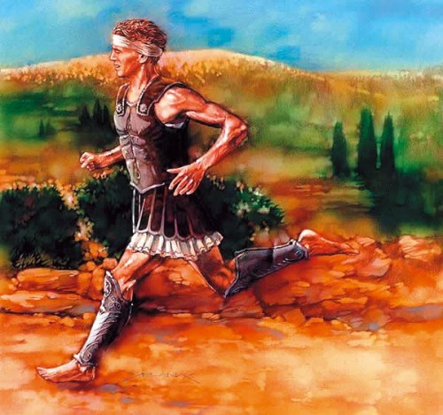
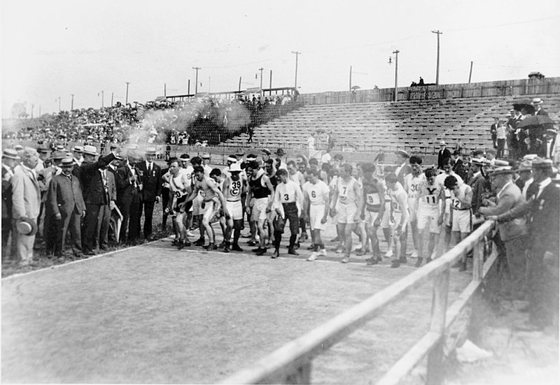
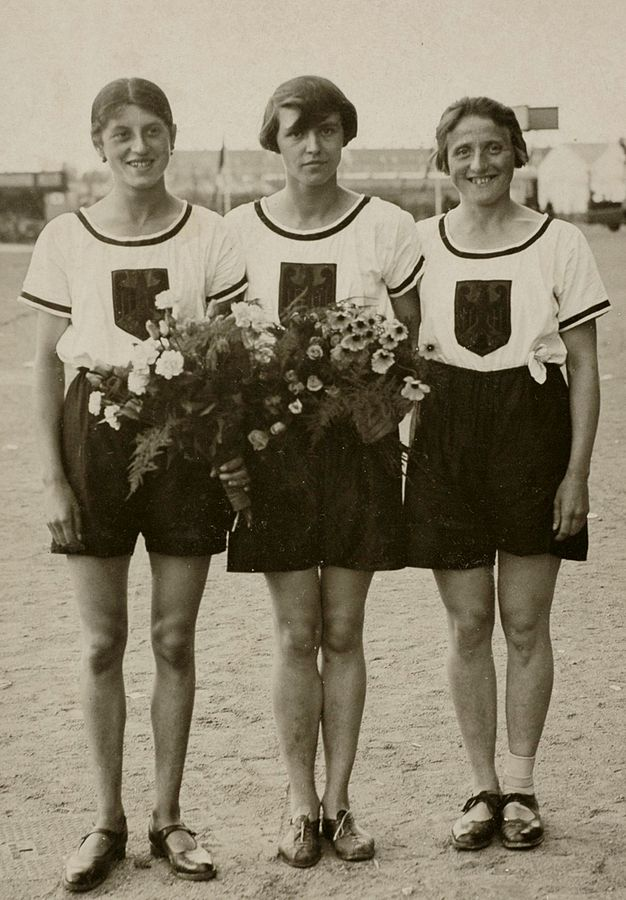

El origen del maratón: el imperio persa a las puertas de Atenas.
Antes de abordar la leyenda del origen del maratón es importante advertir que no hay acuerdo de si es cierta o no. Lo que sí sabemos seguro es que Atenas libró una guerra sin cuartel contra el imperio Persa. En esa guerra la batalla de Maratón era crucial.
Maratón era una ciudad situada a unos 40 km de Atenas. Se trataba del último bastión. Si se perdía el ejército persa entraría en Atenas y la conquistaría para sí. De hecho los atenienses estaban convencidos de haber perdido esa batalla y se disponían a quemar la ciudad por completo.
Sin embargo, lo cierto era que Atenas había ganado la batalla de Maratón. Aquí entra en juego el primer corredor de esta distancia de la historia. Filípides era un mensajero al que se le encomendó correr desde Maratón a Atenas para evitar el desastre. Y corrió, de hecho se dice que dejó la vida en ello. Al finalizar los 40 km dio un grito de alarma y se desplomó a las puertas de la ciudad.

Imagen disponible en el portal: El Rosario
El origen del maratón olímpico
Los primeros Juegos Olímpicos tal y compo los entendemos en la actualidad se celebraron en 1896. En aquella fecha los organizadores del evento quisieron recordar un evento que trajese la grandeza del antiguo imperio griego.
El primer ganador de esta carrera de larga distancia fue el griego Spyridon Louis que realizó la prueba en casi tres horas. Una marca que hoy en día no sorprende pero que en aquel entonces resultó impresionante.

Autor desconocido imagen disponible en Wikimedia Commons
{kind=link}
¿Como se estableció su distancia?
La distancia que corren quienes compiten en una maratón es 42,195 km. Una distancia que parece algo extraña pero corresponde a un capricho britanico.
Corría 1908 y los Juegos Olímpicos se celebraban en Londres para que la reina de Inglaterra pudiera presenciar la salida de la carrera y la llegada situaron estas en el estadio olímpico para lo cual se tuvo que alargar la distancia quedando en la que hoy conocemos como 42,195km.
Las mujeres desde el origen del maratón
Los primeros Juegos Olímpicos se celebraron en 1896, como hemos dicho anteriormente, pero no se permitió correr a las mujeres hasta 1928. Se consideraba que el atletismo resultaba demasiado extenuante. En aquella fecha se les permitió participar pero solo pudieron correr carreras de hasta 800 m.
Ese mismo la alemana Lina Radke estableció un nuevo record en la prueba pero otras no tuvieron tanta suerte. Algunas de las participantes no se habían preparado como debían y cayeron desmayadas en la pista. Como consecuencia se impidió correr a las mujeres distancias superiores a los 200 m hasta los juegos de Moscú.
En 1980 se les permitió correr los 3.000 m.

Lina Radke año 1928. Autor desconocido foto disponible en Wikimedia Commons
{kind=link}
¿Y qué pasa con los maratones populares?
Desde el origen del maratón ha habido maratones populares. Hoy en día los más conocidos y populares del planeta son los de Boston, Nueva York, San Francisco, Tokio y Berlín. Y la participación de las mujeres en ellos no siempre ha estado permitida.
De hecho, la entrada de la mujer en esta carrera de larga distancia se debe a los incidentes protagonizados por Kathrine Switzer. Una mujer que se inscribió en la carrera con el nombre de K.V. Switzer. A los pocos km del inicio los organizadores se dieron cuenta del error cometido y trataron de sacarla de la carrera.
Kathrine Switzer terminó la maratón de Boston de 1967 en 04 h y 20 m.
Las fotografías de la policía persiguiéndola se publicaron en prensa al día siguiente y abrieron el debate acerca de la participación de las mujeres en la maratón. Este es el origen del maratón femenino.
Canal Mas Running. (3 de diciembre de 2015). La historia de Kathrine Switzer.